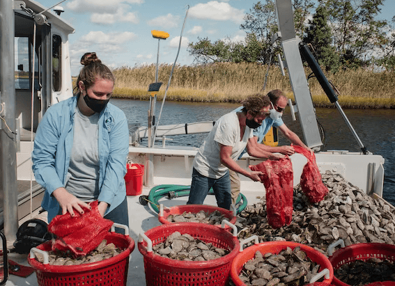
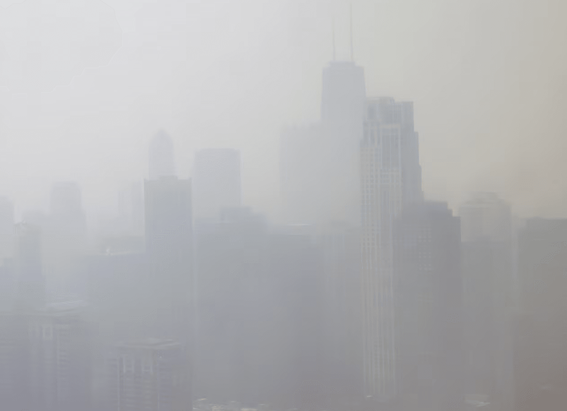

NATIONAL GEOGRAPHIC
What was Leonard Bernstein and JFK's friendship really like
HISTORY & CULTURE
Leonard Bernstein and John F. Kennedy: One was a maestro, the other a president, and both were titans of 20th-century America. They were also unexpected friends whose relationship represented the union of American arts and politics during the Kennedy administration.
When Kennedy was assassinated on November 22, 1963/ 60 years ago this month Bernstein was bereft. Two years later, the legendary composer spoke about their friendship in an oral history interview with the John F. Kennedy Library revealing surprising sides to them both.
Two boys from Massachusetts
Bernstein and Kennedy both hailed from Massachusetts, but it might as well have been two different planets.
Leonard Bernstein was born in Lawrence on August 25, 1918. His parents were Ukrainian immigrants who built a successful beauty supply company. Young Bernstein did not want to sell wigs, however he wanted to make music.
John Fitzgerald Kennedy, however, did join the family business. Kennedy was born in Brookline on May 29, 1917, to one of Boston’s political dynasties. His grandfather, P. J. Kennedy, was a state politician, and his father, Joseph P. Kennedy, eventually became ambassador to the United Kingdom.
After more than an hour of fighting, San José blew up and sank when its store of gunpowder exploded; another galleon was captured, but most of the rest of the Spanish fleet fled to safety in the harbor at Cartagena.
Bernstein entered Harvard University in 1935; Kennedy started the next year. Though their orbits synced in Cambridge, their paths never crossed.
After college, Bernstein built a career in music, becoming a prominent composer and conductor who would lead the New York Philharmonic. Meanwhile, Kennedy dove headfirst into politics.
An unlikely friendship
Bernstein dated his first meeting with Kennedy to 1954, when the man who would become president was still a senator from Massachusetts. Kennedy invited Bernstein and his wife Felicia to lunch in the U.S. Senate dining room, and Bernstein appreciated Kennedy’s “casualness and majesty” and enthusiasm for ideas.
Their paths crossed again in 1961, after Bernstein had achieved stardom with his musical West Side Story, and Kennedy had been elected president of the United States. On January 19, the night before Inauguration Day, Frank Sinatra organized a star-studded gala in honor of the new president-elect. Among the artists he recruited: Leonard Bernstein, who wrote and conducted Fanfare for the Inauguration of John F. Kennedy to commemorate the event.
Initially, official events bonded the two men. They collaborated on a committee to form a National Cultural Center. Kennedy also invited the Bernsteins to state dinners and receptions.
In his interview for the Kennedy Library, Bernstein recollected a reception featuring cellist Pablo Casals in 1961, marveling over the Kennedys’ ability to make everyone feel welcome. “I’ve never seen so many happy artists in my life. It was a joy to watch it. And the feeling of hospitality, of warmth, of welcome, the taste with which everything was done.”
Comments :
- john Very good
- john Very good
Leave a Reply
Your email address will not be published. Required fields are marked*
Related posts:
-
Haunted Appalachia These ancient mountains witnessed the birth of man and monster
From the Mothman, Wampus Cat, and Raven Mocker to the Grafton and Flatwoods Monsters, the Appalachians are teeming with supernatural creatures. TikTok is flooded with stories of #hauntedappalachia
View article -
Could billions of oysters protect us from the next big storm
This year has been a year of record-breaking weather. The summer of 2023 was the hottest in history followed by September being the warmest on record by a wide margin. In New York, it was also the wettest September
View article -
How wildfire smoke infiltrates your home and how to get rid of it
Wildfires are becoming increasingly common, lengthy, and intense, due to climate change. In addition to endangering lives, homes, and the environment, the smoke they cause has health risks, including respiratory and heart disease.
View article